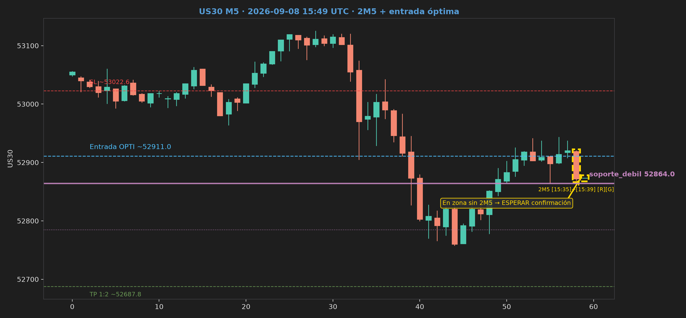

| Precio | 52119.0 |
|---|---|
| Veredicto | No operar (SHORT) |
| Entrada óptima | 52149.4 |
| Entry usuario | 51753.0 (CLI · past) |
| ICT | Base 52149.4 (zona base) · Sweep PDH @ 51861.0 + reclaim · PD PREMIUM · H1 INSIDE_RANGE |
| Plan | Entry 51753.0 · SL 52016.6 · TP 51225.8 · plan usuario |
| E2 / Break | BREAK / E1 — Sin reversión E2 — E1 primario |
| Métricas | Rules 66% · Neural 72% · ML 0.0% · Confluencia BAJA — 27% · Rules 66%; Neural gated 64% (medium); ML 0% veto suave; 2M5 no listo; Break con fricción CRT |
| Historial ref | us30-033 · 2026-09-24 11:25 NY · Entry 51716.0 · REGULAR — precio cerca de Entry actual; sin 2M5; zona OK · (MÁS CERCA) · Δ Entry +433.4 pts (+0.838%) · precio→última 403.0 pts (0.779%) · precio→actual 30.4 pts (0.058%) |
| Bando usado (lado asumido) | BEARISH |
| Bando mercado (H1) | NEUTRAL |
| R:R | 1:2 |
| Dist. a Entrada óptima | +30.4 pts (0.058%) |
| Dist. a Entry usuario | -366.0 pts (0.702%) |
| Dist. a SL | -102.4 pts (0.197%) |
| Dist. a TP | -893.2 pts (1.714%) |
| Riesgo (pts) | 263.6 |
| SL/TP | estructura pasada (past) |
| Winrate setup | ~82% — patrón ganador similar · histórico E1 BTC |
| Score Rules extendido | 70% |
| Estado 2M5 | Falta 2M5 — ESPERAR |
| Bias H1 vs bando | H1 NEUTRAL · CLI BEARISH |
| Calidad break/reverse | BREAK (continuación E1) |
| Neural grade/conf | B · conf. medium · 72% WIN |
| Rules E1 detalle | 4/6 (66%) |
| Vol Zentinel (filtro) | muy_bajo · 0.00× · Zentinel_US30_E1 |
| MACD-quant (filtro) | en contra · Hist 39.39 · never trigger |
| Watchtower KZ | FUERA_NY (Lunch) · Watchtower_US30_E1 |
| Chart | Preview en navegador |
